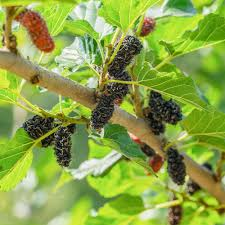

Info Tanaman Banyumanik

Murbei
Kingdom: Plantae
Divisi: Magnoliophyta
Kelas: Magnoliopsida
Ordo: Rosales
Famili: Moraceae
Genus: Morus
Spesies: Morus alba
🌱 Budidaya
- Lingkungan: Tumbuh baik di dataran tinggi maupun rendah. Butuh sinar matahari penuh dan tanah yang subur serta tidak tergenang.
- Penanaman: Dapat diperbanyak dengan stek batang. Jarak tanam ideal 1–2 meter agar tidak saling teduh.
- Perawatan: Siram secara rutin dan beri pupuk organik setiap bulan. Pangkas cabang untuk merangsang pertumbuhan buah yang lebih banyak.
💡 Fun Fact
"Daun Favorit Penghasil Sutra" — Murbei menjadi makanan utama bagi ulat sutra (Bombyx mori), yang memproduksi benang sutra berkualitas tinggi dan menopang industri kain sutra di berbagai negara.
🍃 Manfaat
- Buah murbei kaya akan nutrisi dan vitamin sehingga sangat cocok untuk dijadikan camilan sehat yang rendah kalori.
- Buah murbei dapat dikembangkan menjadi produk UMKM yang bernilai tinggi, seperti sirup, selai, dan teh herbal.
- Dengan pertumbuhan yang merambat dan cepat, murbei dapat digunakan sebagai pagar hidup atau penghijau pekarangan.